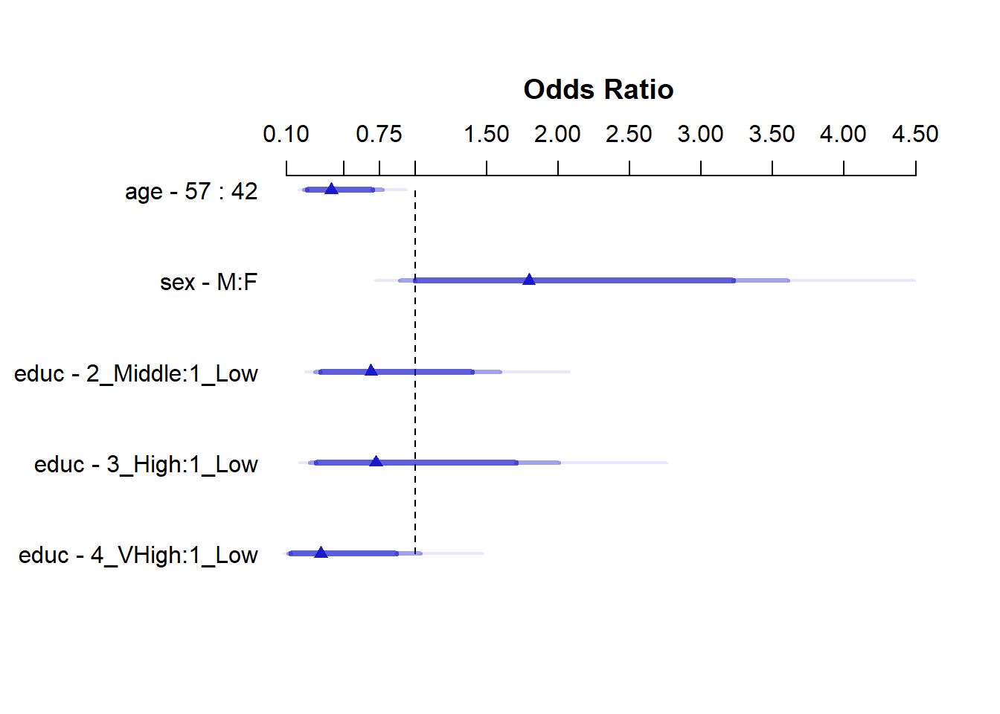

knitr::opts_chunk$set(comment = NA)
library(broom)
library(knitr)
library(rms)
library(tidyverse)
theme_set(theme_bw())22 Estimating and Interpreting Effect Sizes
22.1 R Setup Used Here
22.1.1 Data Load
Consider the smalldat.csv data available on our site, which is modeled on the public Framingham data set available from BIOLINCC1. From the BIOLINCC documentation:
The Framingham Heart Study is a long term prospective study of the etiology of cardiovascular disease among a population of free living subjects in the community of Framingham, Massachusetts. The Framingham Heart Study was a landmark study in epidemiology in that it was the first prospective study of cardiovascular disease and identified the concept of risk factors and their joint effects.
smalldat <- read_csv("data/smalldat.csv", show_col_types = FALSE)22.2 Available Variables
The smalldat data contains 150 observations on the following variables2:
| Variable | Description |
|---|---|
| subject | Subject identification code |
| smoker | 1 = current smoker, 0 = not current smoker |
| totchol | total cholesterol, in mg/dl |
| age | age in years |
| sex | subject’s sex (M or F) |
| educ | subject’s educational attainment (4 levels) |
ggplot(smalldat, aes(x = totchol)) +
geom_histogram(bins = 15, col = "white", fill = "dodgerblue")22.3 Effect Interpretation in A Linear Regression Model
m1 <- lm(totchol ~ age + sex + factor(educ),
data = smalldat)
kable(tidy(m1, conf.int = TRUE), digits = 3)| term | estimate | std.error | statistic | p.value | conf.low | conf.high |
|---|---|---|---|---|---|---|
| (Intercept) | 171.197 | 20.201 | 8.475 | 0.000 | 131.268 | 211.126 |
| age | 1.202 | 0.367 | 3.270 | 0.001 | 0.475 | 1.928 |
| sexM | 3.612 | 6.441 | 0.561 | 0.576 | -9.119 | 16.343 |
| factor(educ)2_Middle | 11.044 | 7.702 | 1.434 | 0.154 | -4.180 | 26.268 |
| factor(educ)3_High | -2.459 | 9.390 | -0.262 | 0.794 | -21.019 | 16.101 |
| factor(educ)4_VHigh | 10.927 | 9.780 | 1.117 | 0.266 | -8.405 | 30.258 |
- What is the effect of age on totchol in Model
m1?
temp.a <- tidy(m1, conf.int = TRUE) %>%
filter(term == "age")
kable(temp.a, digits = 3)| term | estimate | std.error | statistic | p.value | conf.low | conf.high |
|---|---|---|---|---|---|---|
| age | 1.202 | 0.367 | 3.27 | 0.001 | 0.475 | 1.928 |
The coefficient of the age effect on totchol is 1.202. Suppose we have two subjects, Doris and Emily, who are the same sex and have the same level of education, but Doris is one year older than Emily. Our model predicts that Doris’ total cholesterol will be 1.202 mg/dl higher than Emily’s.
The 95% confidence interval for this estimated age coefficient is (0.475, 1.928), so holding everything else constant, it seems that older age is associated with higher totchol in this model.
- What is the effect of sex on
totcholin Modelm1?
temp.s <- tidy(m1, conf.int = TRUE) %>%
filter(term == "sexM")
kable(temp.s, digits = 3)| term | estimate | std.error | statistic | p.value | conf.low | conf.high |
|---|---|---|---|---|---|---|
| sexM | 3.612 | 6.441 | 0.561 | 0.576 | -9.119 | 16.343 |
The model is parametrized to incorporate the sex information with an indicator (and factor) variable called sexM which is interpreted as taking the value 1 when sex = M, and 0 otherwise. The coefficient of the sexM effect on totchol is 3.612. Suppose we have two subjects, David and Emily, who are the same age, have the same level of education, but David is male and Emily is female. Our model predicts that David’s total cholesterol will be 3.612 mg/dl higher than Emily’s.
The 95% confidence interval for this estimated sexM coefficient is (-9.119, 16.343), which suggests that the effect of sex on totchol could be quite small, and that the data are consistent with a wide range of estimates for the sexM effect, some of which are negative.
- What is the effect of educ on totchol in Model
m1?
The educ variable splits the subjects into four categories. In this model the “1_Low” category is used as the baseline, and we have estimates for “2_Middle” (as compared to “1_Low”), for “3_High” (as compared to “1_Low”) and for “4_VHigh” (as compared to “1_Low”.)
temp.ed <- tidy(m1, conf.int = TRUE) %>%
filter(term %in% c("factor(educ)2_Middle",
"factor(educ)3_High",
"factor(educ)4_VHigh"))
kable(temp.ed,
digits = 3)| term | estimate | std.error | statistic | p.value | conf.low | conf.high |
|---|---|---|---|---|---|---|
| factor(educ)2_Middle | 11.044 | 7.702 | 1.434 | 0.154 | -4.180 | 26.268 |
| factor(educ)3_High | -2.459 | 9.390 | -0.262 | 0.794 | -21.019 | 16.101 |
| factor(educ)4_VHigh | 10.927 | 9.780 | 1.117 | 0.266 | -8.405 | 30.258 |
The coefficient of the educ effect comparing the “2_Middle” group to the baseline “1_Low” group on totchol is 11.044.
Note that none of the educ levels show especially large differences from the baseline group, and each of their 95% confidence intervals contains zero.
- Suppose we have two subjects, Lola and Mina, who are the same age, and the same sex, but Lola is in the “1_Low” education group and Mina is in the “2_Middle” education group.
- Our model predicts that Mina’s total cholesterol will be 11.044 mg/dl higher than Lola’s.
The coefficient of the educ effect comparing the “3_High” group to the baseline “1_Low” group on totchol is -2.459.
- Suppose we have two subjects, Lola and Heidi, who are the same age, and the same sex, but Lola is in the “1_Low” education group and Heidi is in the “3_High” education group.
- Our model predicts that Heidi’s total cholesterol will be 2.459 mg/dl lower than Lola’s.
Finally, the coefficient of the educ effect comparing the “4_VHigh” group to the baseline “1_Low” group on totchol is 10.927.
- Suppose we have two subjects, Lola and Vera, who are the same age, and the same sex, but Lola is in the “1_Low” education group and Vera is in the “4_VHigh” education group.
- Our model predicts that Vera’s total cholesterol will be 10.927 mg/dl higher than Lola’s.
22.4 Making a prediction and building a prediction interval with an lm fit
Suppose we want to use m1 to make a prediction for Lola and Vera, who we’ll now assume are each Female and 30 years of age, and we want to accompany this with a 90% prediction interval for each subject. Here’s one way to do that.
new1 <- tibble(
name = c("Lola", "Vera"),
age = c(30, 30),
sex = c("F", "F"),
educ = c("1_Low", "4_VHigh")
)
new1# A tibble: 2 × 4
name age sex educ
<chr> <dbl> <chr> <chr>
1 Lola 30 F 1_Low
2 Vera 30 F 4_VHighres1 <- predict(m1, newdata = new1,
interval = "prediction", level = 0.9)
res1 fit lwr upr
1 207.2456 142.322 272.1691
2 218.1725 152.387 283.9580new1_aug <- bind_cols(new1, fit = res1[,"fit"],
pi90.lo = res1[,"lwr"],
pi90.hi = res1[,"upr"])
new1_aug# A tibble: 2 × 7
name age sex educ fit pi90.lo pi90.hi
<chr> <dbl> <chr> <chr> <dbl> <dbl> <dbl>
1 Lola 30 F 1_Low 207. 142. 272.
2 Vera 30 F 4_VHigh 218. 152. 284.22.5 What if we include a Spline or an Interaction?
Suppose we fit a new model to predict totchol using a five-knot spline in age and the interaction of sex and educational attainment. How does that change our interpretation of the effect sizes?
None of these coefficients show particularly large effects, and zero is contained in each of the 95% confidence intervals provided in the table summarizing model m2.
d <- datadist(smalldat); options(datadist = "d")
m2 <- ols(totchol ~ rcs(age, 5) + sex*catg(educ),
data = smalldat, x = TRUE, y = TRUE)
kable(summary(m2), digits = 2)| Low | High | Diff. | Effect | S.E. | Lower 0.95 | Upper 0.95 | Type | |
|---|---|---|---|---|---|---|---|---|
| age | 42 | 57 | 15 | 9.99 | 9.40 | -8.59 | 28.57 | 1 |
| sex - M:F | 1 | 2 | NA | 9.11 | 9.87 | -10.41 | 28.64 | 1 |
| educ - 2_Middle:1_Low | 1 | 2 | NA | 11.36 | 9.81 | -8.04 | 30.76 | 1 |
| educ - 3_High:1_Low | 1 | 3 | NA | 7.80 | 12.41 | -16.73 | 32.34 | 1 |
| educ - 4_VHigh:1_Low | 1 | 4 | NA | 16.17 | 14.63 | -12.75 | 45.10 | 1 |
The kable approach I used in these notes hides the adjusted values specified at the bottom of the summary table for this ols model, but they are Adjusted to: sex=F educ=1_Low.
Now, how do we interpret these model m2 results?
plot(summary(m2))- The age interpretation is that if we have two subjects, Al and Bob, who are the same sex and have the same education level, but Al is age 42 and Bob is age 57, then model
m2projects that Bob’s totchol will be 9.993 mg/dl higher than will Al’s. - Because of the interaction between sex and educ in our model
m2, we must select an educ level in order to cleanly interpret the effect of sex on totchol. The sex - M:F interpretation compares M(ale) to F(emale) sex while requiring3 that educ =1_Low. The result is that if we have two subjects, Carl and Diane, who are the same age and each is in the low education group, but Carl is Male and Diane is Female, then modelm2predicts that Carl’s totchol will be 9.115 mg/dl higher than will Diane’s. - Because of the interaction between sex and educ in our model
m2, we must select a sex in order to cleanly interpret the effect of educ on totchol. The educ - 2_Middle:1_Low term, for instance, compares “2_Middle” education to “1_Low” education while requiring that sex is Female4. The result is that if we have two subjects, Lola and Mina, who are the same age and each is Female, but Lola is in the “1_Low” education group and Mina is in the “2_Middle” education group, then modelm2predicts that Mina’s totchol will be 11.363 mg/dl higher than will Lola’s.
Here is a nomogram of model m2.
plot(nomogram(m2))22.6 Making a prediction and building a prediction interval with an ols fit
Suppose we want to use m2 to make a prediction for Lola and Vera, who we’ll again assume are each Female and 30 years of age, and we want to accompany this with a 90% prediction interval for each subject. Here’s one way to do that.
res2_lola <- Predict(m2,
age = 30, sex = "F", educ = "1_Low",
conf.int = 0.90,
conf.type = "individual")
res2_lola age sex educ yhat lower upper
1 30 F 1_Low 176.7746 96.77241 256.7768
Response variable (y): totchol
Limits are 0.9 confidence limitsres2_vera <- Predict(m2,
age = 30, sex = "F", educ = "4_VHigh",
conf.int = 0.90,
conf.type = "individual")
res2_vera age sex educ yhat lower upper
1 30 F 4_VHigh 192.9483 112.3727 273.5238
Response variable (y): totchol
Limits are 0.9 confidence limits22.7 Effect Estimates in A Logistic Regression fit with glm
In a binary logistic model, where we predict the log odds of smoking (smoker = 1), we will exponentiate so as to interpret the odds ratio estimates associated with each coefficient.
m3 <- glm(smoker ~ age + sex + factor(educ),
data = smalldat, family = binomial)
kable(tidy(m3, exponentiate = TRUE, conf.int = TRUE),
digits = 3)| term | estimate | std.error | statistic | p.value | conf.low | conf.high |
|---|---|---|---|---|---|---|
| (Intercept) | 19.054 | 1.152 | 2.557 | 0.011 | 2.082 | 195.209 |
| age | 0.943 | 0.021 | -2.782 | 0.005 | 0.903 | 0.982 |
| sexM | 1.795 | 0.356 | 1.643 | 0.100 | 0.897 | 3.637 |
| factor(educ)2_Middle | 0.690 | 0.428 | -0.866 | 0.386 | 0.295 | 1.589 |
| factor(educ)3_High | 0.725 | 0.519 | -0.619 | 0.536 | 0.258 | 2.005 |
| factor(educ)4_VHigh | 0.339 | 0.571 | -1.895 | 0.058 | 0.105 | 1.008 |
- What is the effect of age on the odds of being a smoker in Model
m3?
temp.3a <- tidy(m3, exponentiate = TRUE, conf.int = TRUE) %>%
filter(term == "age")
kable(temp.3a, digits = 3)| term | estimate | std.error | statistic | p.value | conf.low | conf.high |
|---|---|---|---|---|---|---|
| age | 0.943 | 0.021 | -2.782 | 0.005 | 0.903 | 0.982 |
The estimated odds ratio for the age effect on smoker is 0.943. Suppose we have two subjects, Doris and Emily, who are the same sex and have the same level of education, but Doris is one year older than Emily. Our model predicts that Doris’ odds of smoking will be 0.943 times as high as Emily’s. Another way to write this would be that Doris’ odds of smoking are estimated to be 94.3% of Emily’s. Yet another way would be to state that Doris’ odds of smoking are estimated to be 5.7% smaller than Emily’s odds.
The 95% confidence interval for this estimated odds ratio for the age effect on being a smoker is (0.903, 0.982). This confidence interval for the odds ratio does not include one, and again we see that holding everything else constant, older age is associated with detectably lower odds of being a smoker in this model.
- What is the effect of sex on the odds of being a smoker in Model
m3?
temp.3s <- tidy(m3, exponentiate = TRUE, conf.int = TRUE) %>%
filter(term == "sexM")
kable(temp.3s, digits = 3)| term | estimate | std.error | statistic | p.value | conf.low | conf.high |
|---|---|---|---|---|---|---|
| sexM | 1.795 | 0.356 | 1.643 | 0.1 | 0.897 | 3.637 |
The model incorporates the sex information with an indicator (and factor) variable called sexM which is interpreted as taking the value 1 when sex = M, and 0 otherwise. The estimated odds ratio describing the sexM effect on being a smoker is 1.795. Suppose we have two subjects, David and Emily, who are the same age, have the same level of education, but David is male and Emily is female. Our model predicts that David’s odds of being a smoker are 1.795 times the odds that Emily is a smoker, or equivalently, that David’s odds are 179.5% of Emily’s odds. Another equivalent statement would be that David’s odds are 79.5% larger than Emily’s odds.
The 95% confidence interval for the odds ratio estimate of the effect of sexM on being a smoker is (0.897, 3.637). The effect of sex on the odds of being a smoker appears modest, and 1 is included in the confidence interval.
- What is the effect of educ on the odds of being a smoker in Model
m3?
Again, the educ variable splits the subjects into four categories. In this model the “1_Low” category is used as the baseline, and we have estimates for “2_Middle” (as compared to “1_Low”), for “3_High” (as compared to “1_Low”) and for “4_VHigh” (as compared to “1_Low”.)
temp.3ed <- tidy(m3, exponentiate = TRUE, conf.int = TRUE) %>%
filter(term %in% c("factor(educ)2_Middle",
"factor(educ)3_High",
"factor(educ)4_VHigh"))
kable(temp.3ed,
digits = 3)| term | estimate | std.error | statistic | p.value | conf.low | conf.high |
|---|---|---|---|---|---|---|
| factor(educ)2_Middle | 0.690 | 0.428 | -0.866 | 0.386 | 0.295 | 1.589 |
| factor(educ)3_High | 0.725 | 0.519 | -0.619 | 0.536 | 0.258 | 2.005 |
| factor(educ)4_VHigh | 0.339 | 0.571 | -1.895 | 0.058 | 0.105 | 1.008 |
The estimated odds ratio describing the effect of educ being “2_Middle” instead of the baseline “1_Low” on the odds of being a smoker is 0.69, for people of the same age and sex.
No educ levels show meaningful differences from the baseline group, and their 95% confidence intervals all include 1, although the comparison of 4_VHigh to 1_Low only barely includes 1.
- Suppose we have two subjects, Lola and Mina, who are the same age, and the same sex, but Lola is in the “1_Low” education group and Mina is in the “2_Middle” education group.
- Our model predicts that Mina’s odds of being a smoker will be 0.69 times the odds of Lola being a smoker.
The estimated odds ratio comparing the educ = “3_High” group to the baseline educ = “1_Low” group on smoker is 0.725.
- Suppose we have two subjects, Lola and Heidi, who are the same age, and the same sex, but Lola is in the “1_Low” education group and Heidi is in the “3_High” education group.
- Our model predicts that Heidi’s odds of being a smoker will be 0.725 times the odds of Lola being a smoker.
Finally, The estimated odds ratio comparing the educ = “4_VHigh” group to the baseline educ = “1_Low” group on smoker is 0.339.
- Suppose we have two subjects, Lola and Vera, who are the same age, and the same sex, but Lola is in the “1_Low” education group and Vera is in the “4_VHigh” education group.
- Our model predicts that Vera’s odds of being a smoker will be 0.339 times the odds of Lola being a smoker.
22.8 Estimates in The Same Logistic Regression fit with lrm
When we fit the same model as m3 using lrm, we get identical results as we get from the glm fit for the categorical predictors, but there’s a change in how the odds ratio for the quantitative predictor (age) is presented.
d <- datadist(smalldat); options(datadist = "d")
m3.lrm <- lrm(smoker ~ age + sex + educ,
data = smalldat, x = TRUE, y = TRUE)
kable(summary(m3.lrm), digits = 3)| Low | High | Diff. | Effect | S.E. | Lower 0.95 | Upper 0.95 | Type | |
|---|---|---|---|---|---|---|---|---|
| age | 42 | 57 | 15 | -0.885 | 0.318 | -1.508 | -0.261 | 1 |
| Odds Ratio | 42 | 57 | 15 | 0.413 | NA | 0.221 | 0.770 | 2 |
| sex - M:F | 1 | 2 | NA | 0.585 | 0.356 | -0.113 | 1.283 | 1 |
| Odds Ratio | 1 | 2 | NA | 1.795 | NA | 0.893 | 3.607 | 2 |
| educ - 2_Middle:1_Low | 1 | 2 | NA | -0.370 | 0.428 | -1.209 | 0.468 | 1 |
| Odds Ratio | 1 | 2 | NA | 0.690 | NA | 0.299 | 1.596 | 2 |
| educ - 3_High:1_Low | 1 | 3 | NA | -0.321 | 0.519 | -1.338 | 0.696 | 1 |
| Odds Ratio | 1 | 3 | NA | 0.725 | NA | 0.262 | 2.005 | 2 |
| educ - 4_VHigh:1_Low | 1 | 4 | NA | -1.082 | 0.571 | -2.201 | 0.037 | 1 |
| Odds Ratio | 1 | 4 | NA | 0.339 | NA | 0.111 | 1.038 | 2 |
Note that the odds ratio effect sizes and confidence intervals are identical to what we saw in the glm fit for the sex and educ variables here, but the age result is presented differently.
- The age interpretation is that if we have two subjects, Al and Bob, who are the same sex and have the same education level, but Al is age 42 and Bob is age 57, then model
m3projects that Bob’s odds of being a smoker will be 0.413 times Al’s odds of being a smoker. Bob’s odds are 41.3% as large as Al’s, equivalently. - After adjustment for sex and educ, increasing age appears to be associated with decreasing odds of smoking. Note, too, that the effect of age on the odds of being a smoker has a confidence interval for the odds ratio entirely below 1.
plot(summary(m3.lrm))
22.9 Estimates in A New Logistic Regression fit with lrm
Now, suppose we fit a new model to predict the log odds of being a smoker using a five-knot spline in age and the interaction of sex and educational attainment. How does that change our interpretation of the effect sizes?
d <- datadist(smalldat); options(datadist = "d")
m4 <- lrm(smoker ~ rcs(age,5) + sex * catg(educ),
data = smalldat, x = TRUE, y = TRUE)
kable(summary(m4), digits = 3)| Low | High | Diff. | Effect | S.E. | Lower 0.95 | Upper 0.95 | Type | |
|---|---|---|---|---|---|---|---|---|
| age | 42 | 57 | 15 | -0.817 | 0.538 | -1.872 | 0.237 | 1 |
| Odds Ratio | 42 | 57 | 15 | 0.442 | NA | 0.154 | 1.268 | 2 |
| sex - M:F | 1 | 2 | NA | 1.487 | 0.583 | 0.345 | 2.629 | 1 |
| Odds Ratio | 1 | 2 | NA | 4.422 | NA | 1.412 | 13.853 | 2 |
| educ - 2_Middle:1_Low | 1 | 2 | NA | 0.668 | 0.546 | -0.402 | 1.739 | 1 |
| Odds Ratio | 1 | 2 | NA | 1.951 | NA | 0.669 | 5.690 | 2 |
| educ - 3_High:1_Low | 1 | 3 | NA | 0.019 | 0.699 | -1.351 | 1.389 | 1 |
| Odds Ratio | 1 | 3 | NA | 1.019 | NA | 0.259 | 4.011 | 2 |
| educ - 4_VHigh:1_Low | 1 | 4 | NA | -1.541 | 1.159 | -3.813 | 0.731 | 1 |
| Odds Ratio | 1 | 4 | NA | 0.214 | NA | 0.022 | 2.078 | 2 |
Again, the kable approach I used in these notes hides the adjusted values specified at the bottom of the summary table for this lrm model (model m4), but they are Adjusted to: sex=F educ=1_Low.
Now, how do we interpret these model m4 results?
plot(summary(m4))- The age interpretation is that if we have two subjects, Al and Bob, who are the same sex and have the same education level, but Al is age 42 and Bob is age 57, then model
m4projects that Bob’s odds of being a smoker will be 0.442 times Al’s odds of being a smoker. Equivalently, Bob’s odds are 44.2% as large as Al’s. - Because of the interaction between sex and educ in our model
m4, we must select an educ level in order to cleanly interpret the effect of sex on smoker. The sex - M:F interpretation compares M(ale) to F(emale) sex while requiring5 that educ =1_Low. The result is that if we have two subjects, Carl and Diane, who are the same age and each is in the low education group, but Carl is Male and Diane is Female, then modelm4predicts that Carl’s odds of being a smoker will be 4.422 times the odds for Diane. - Because of the interaction between sex and educ in our model
m4, we must select a sex in order to cleanly interpret the effect of educ on totchol. The educ - 2_Middle:1_Low term, for instance, compares “2_Middle” education to “1_Low” education while requiring that sex is Female6. The result is that if we have two subjects, Lola and Mina, who are the same age and each is Female, but Lola is in the “1_Low” education group and Mina is in the “2_Middle” education group, then modelm4predicts that Mina’s odds of being a smoker will be 1.951 times Lola’s odds, or, equivalently, that Mina will have 95.1% higher odds than Lola.
It should be easy to see that one is contained in each of the 95% confidence intervals summarizing model m4 except for the one for the main effect of sex, but we might also consider the impact of the interaction term, as described by the anova result for model m4.
anova(m4) Wald Statistics Response: smoker
Factor Chi-Square d.f. P
age 8.34 4 0.0799
Nonlinear 1.78 3 0.6196
sex (Factor+Higher Order Factors) 12.64 4 0.0132
All Interactions 10.48 3 0.0149
educ (Factor+Higher Order Factors) 12.43 6 0.0531
All Interactions 10.48 3 0.0149
sex * educ (Factor+Higher Order Factors) 10.48 3 0.0149
TOTAL NONLINEAR + INTERACTION 12.60 6 0.0498
TOTAL 21.69 11 0.0269Finally, here is a nomogram of model m4.
plot(nomogram(m4, fun = plogis))
The Framingham data from this source are not appropriate for publication or project use because they have been anonymized by permuting the results of individual subjects.↩︎
The educ levels are: 1_Low, 2_Middle, 3_High and 4_VHigh, which stands for Very High↩︎
We know this because of the
Adjusted to: sex = F, educ=1_Lownote at the bottom of thesummaryoutput for theolsmodel.↩︎Again, we know this because of the
Adjusted to: sex = F, educ=1_Lownote.↩︎We know this because of the
Adjusted to: sex = F, educ=1_Lownote at the bottom of thesummaryoutput.↩︎Adjusted to: sex = F, educ=1_Lowtells us this.↩︎